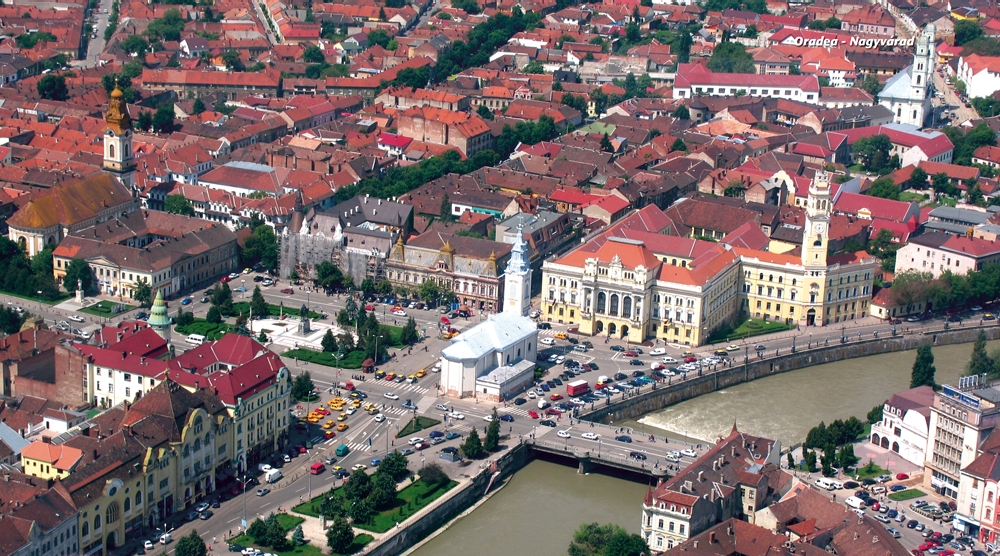

-1-MasterItem.svg)
Stories of Westminster United Church & its People / Page
214
were cleaned and re-leaded using interest from the Foundation Fund. By the time
of my retirement in
1979, the foundation stood at well over $100,000. The 1991 Annual Report shows
$300,000. Capital
grants have been given to put a new roof on the church and to renew the heating
system. I
understand that interest from the fund is being used to underwrite some of the
expenses of the 1992
centennial year observances. Perhaps our airfare to the centennial is being paid
from the interest on
the fund which I so strongly urged the board to establish!
I should mention, too, establishing the chapel. In both Edmonton and Regina,
there was a separate
chapel, so useful when you have a large sanctuary. Many smaller wedding and
funeral services were
conducted in the chapel. But there simply didn’t seem to be any suitable location for such a facility at
Westminster, unless we used either
the church parlour, always called the
Ladies Parlour, or the so-called
primary room which was a multi-
purpose room used for Sunday school,
the library, counting offering on
Sunday, quilting every Thursday, and
for various committee meetings. After
some tactful discussion with the UCW,
it was planned to use the parlour. We
would have chairs instead of
permanent pews. There would be a
drape (on a track) behind the
communion table and lectern and
organ that could be pulled around to
the front of the chancel area to make the chapel a meeting room, and all would
be well. A young
architect with a good sense of what we desired did our design work. Sufficient
families gave
memorial contributions to cover the $18,000 cost; and Westminster now has a most
attractive chapel
which seats sixty or seventy people. By interesting coincidence, the first of
many funerals I conducted
in the chapel was that young architect’s aunt (one of the Riddell family). The second funeral was for
the mother of Ted Millman, chairman of the chapel building committee. There have
been many
Rev. Robert Thompson and Lorraine Thompson
